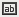

The Cleo Dashboards™ and Cleo System Monitor™ software is runs in a web browser. The main window consists of four sections: the top bar, the tab bar (located just underneath the top bar), the side bar, and the dashboard editing area (where the display components are shown).
Top Bar
In the Cleo Dashboards™ product, a drop-down list displays the VersaLex Pool associated with the current view. You can select a different VersaLex Pool from the drop-down list.
In the Cleo System Monitor™ product, two drop down lists display the VersaLex Pool and VersaLex instance associated with the current view. You can choose a different VersaLex by first selecting the appropriate VersaLex Pool and then selecting the VersaLex.
On the rightmost side of the top bar are four buttons:
The first splits the screen vertically. The second splits the screen horizontally. Splitting the screen allows the user to see Cleo Dashboards™ for multiple VersaLex Pools or to see the Cleo System Monitor™ for multiple VersaLexes. The third displays the dashboard help. The fourth closes that portion of the split screen. If the screen is not split, it closes the dashboards displayed, logs the user out, and returns to the login screen.
Tab Bar
The tab bar contains tabs for each open dashboard. The initial selection of dashboards shown, along with their order of placement (left-to-right), is configured by your system administrator through VLNavigator. Each tab represents an active dashboard. The following are operations available on the tabs:
- Activate a tab: Click a tab to activate the corresponding dashboard. Simply activating a tab does not refresh the display. To refresh the display, click on the side bar Refresh icon.
- Move a tab: Drag a tab and drop it beside a different tab to change the tab order.
- Close a tab: Click beside a dashboard name to close the dashboard.
- Add a tab: Click to add a new, blank dashboard in the current web browser.
Side Bar
The side bar drives the available resources and features available to each open dashboard. The buttons on the side bar apply only to the active dashboard tab. The side bar contains the following buttons:
- Show
Resources or Hide Resources: Toggles the Resources
panel (see Resources Panel) panel which includes these branches:
- Component Library lists the available library components (*.lc files). These components can be used anywhere within a dashboard body.
- Reports lists the available web reports (*.wls files). You can open a web report or add report data components into your dashboards; however, this is not recommended, as web reports are generally accessed directly from library components. Although dashboards (*.dsh files) are technically classified as reports, they are not listed here. To open a new dashboard, click Open.
- Toolbox lists the objects that can be inserted in your dashboards such as labels, images, special fields, filters, and links to third-party objects.
- New: Creates a new blank dashboard with a new tab added. This provides a blank template into which you can drag library components (*.lc files) and items from the toolbox (such as filters) to build a customized dashboard. See Creating a New Dashboard.
- Open: Displays the Open Dashboard dialog box, from which you can select an existing dashboard. The dashboard is opened in a new tab. See Opening an Existing Dashboard.
- Save: Saves the changes made to the current dashboard. See Saving a Dashboard.
- Refresh: Refreshes the component data on the current dashboard. See Refreshing a Dashboard.
-  Enter Parameter Values: Opens the Enter Parameter Values dialog box, through which you can configure parameters for each dashboard. If this icon is dimmed, none of the components on the dashboard accept or require parameter input. See Specifying Dashboard Parameter Valuesfor details.
 Clear Filters: Clears all the filter settings on the current
dashboard. See Filtering Dashboard Component Data.
Clear Filters: Clears all the filter settings on the current
dashboard. See Filtering Dashboard Component Data. -
Options: Displays the following options:
- New: Creates a new blank dashboard. Provides same functionality as the New icon.
- Open: Displays the Open Dashboard dialog box. Provides the same functionality as the Open icon.
- Save: Saves the changes made to the current dashboard. Provides the same functionality as the Save icon.
- Save As: Displays the Save As dialog box, through which you can save the dashboard to a different name and/or location. See Saving a Dashboard for details.
- Clear Filters: Removes all the filters from the current dashboard. Provides the same functionality as the Clear Filters icon.
- Component Title Bar: Opens the Customize Component Title Bar dialog box through which you can customize the library component title bars and icons displayed for the current dashboard.
- Themes: Opens the Themes dialog box through which you can select a different viewing theme for the current dashboard.
- Show/Hide Dashboard Header: Show or hide the dashboard header. See Working with the Dashboard Header for details.